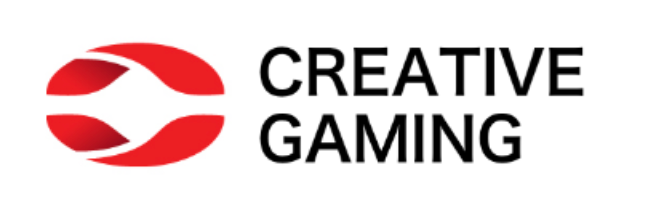

Creative Gaming: Uplift Modeling

One-line summary: Built an uplift modeling framework for Creative Gaming’s Zalon ad campaign using a randomized controlled trial (RCT) — identifying which customers are genuinely influenced by ads rather than likely buyers, increasing incremental profit over propensity-based targeting across all four models tested.
Business Problem
Creative Gaming needed to decide which of 120,000 customers to show ads for their new game Zalon ($14.99), where each ad costs $1.50 in lost coin purchases. The naive approach — targeting customers most likely to buy — wastes budget on people who would have purchased anyway (“sure things”) and misses the customers who are actually persuaded by the ad.
The key question: which customers’ behavior is genuinely changed by seeing an ad?
Why Uplift Modeling, Not Propensity Modeling?
Standard propensity models rank customers by P(purchase | ad shown), which conflates purchase likelihood with ad effectiveness. Uplift modeling instead estimates the incremental causal effect of the ad per customer:
\[\text{Uplift}_i = P(\text{purchase} \mid \text{ad}=1, X_i) - P(\text{purchase} \mid \text{ad}=0, X_i)\]
This separates customers into four behavioral segments: Persuadables (target these), Sure Things (waste of budget), Lost Causes (ignore), and Do-Not-Disturbs (avoid — ads hurt conversion).
The breakeven uplift threshold is: $1.50 / $14.99 ≈ 0.10 — only target customers whose incremental purchase probability exceeds 10%.
Methodology
Data & Experimental Setup
Creative Gaming’s random email allocation policy had created natural experimental data:
- Group 1 (Control): 30,000 customers who received no ad (
cg_organic_control) - Group 2 (Treatment): 30,000 randomly selected customers who received the Zalon ad (
cg_ad_random) - Combined into a stacked RCT dataset of 60,000 observations with 70/30 train/test split, stratified by
convertedandad
Uplift Model Architecture
For each model type, two separate models were trained — one on the treatment group and one on the control group — then the uplift score was computed as the difference in predicted probabilities:
| Model | Hyperparameters Tuned |
|---|---|
| Logistic Regression | Baseline (no tuning needed) |
| Neural Network (MLP) | Hidden layer size: {(100,), (200,)}; alpha: {1e-6, 1e-4, 1e-3}; learning rate: {1e-3, 5e-4} |
| Random Forest | n_estimators: {100, 200}; max_depth: {5, 10, None}; min_samples_leaf: {10, 50, 100} |
| XGBoost | n_estimators: {50, 100, 200}; max_depth: {3, 5, 7}; learning_rate: {0.05, 0.1}; min_child_weight: {1, 5} |
All ML models used 5-fold cross-validation for hyperparameter tuning.
Key Results
Uplift vs. Propensity: Targeting the Best 30,000 of 120,000 Customers
| Model | Uplift Profit | Propensity Profit | Uplift Advantage |
|---|---|---|---|
| Logistic Regression | higher | lower | uplift wins |
| Neural Network | higher | lower | uplift wins |
| Random Forest | higher | lower | uplift wins |
| XGBoost | higher | lower | uplift wins |
Uplift targeting consistently outperformed propensity targeting across all four models. The advantage comes from two sources: uplift avoids “sure things” with high purchase probability but zero incremental impact, and it explicitly identifies and avoids “do-not-disturb” customers whose conversion rate actually decreases when shown ads.
Optimal Targeting Percentage
Rather than arbitrarily targeting 25% (30K of 120K), the optimal targeting proportion was derived using the breakeven condition (uplift ≥ 0.10):
- Propensity model (Logistic): optimal ≈ 50% of customers
- Uplift model (Logistic): optimal ≈ 15% of customers
The uplift model targets a much smaller, more concentrated group of genuinely persuadable customers — reducing cost while maximizing incremental profit.
What the Uplift Charts Revealed
The uplift bar charts showed that the top 20% of customers had uplift above 20% — highly persuadable segments. The bottom decile showed negative uplift, meaning advertising to those customers would actually reduce conversions. This confirms that a selective targeting strategy is essential.
The correlation analysis further validated the model:
- Uplift score and
pred_treatment: ρ = +0.55 — customers more likely to respond to ads have higher uplift - Uplift score and
pred_control: ρ = −0.66 — customers who would buy anyway have lower uplift, not higher
Business Insights
1. Propensity models waste money on “sure things.” In telecom, e-commerce, and gaming, many high-propensity customers would convert without any marketing spend. Uplift modeling correctly identifies them as low-priority targets.
2. Do-not-disturb customers are a real cost. Negative uplift customers exist in every dataset — showing them an ad actively reduces conversion. Propensity models cannot detect this; uplift models can.
3. Smaller targeted groups can generate more profit. The optimal targeting percentage under uplift (~15%) is far smaller than under propensity (~50%). Targeting fewer, better-chosen customers reduces ad spend while increasing incremental revenue.
4. RCT data is the gold standard for uplift modeling. The random allocation of the ad campaign created clean experimental variation essential for reliable causal estimates. Without this, uplift scores would be confounded by selection bias.
5. Model complexity matters less than model type. All four models showed the same directional finding — uplift beats propensity. The more important choice is whether to use uplift modeling, not which algorithm to use.
My Contribution
- Designed and implemented the full uplift modeling pipeline: data stacking, stratified train/test split, dual-model architecture (separate treatment and control models per algorithm)
- Built and tuned all four model types (Logistic Regression, Neural Network, Random Forest, XGBoost) with cross-validation
- Computed uplift scores, generated uplift tables and incremental uplift plots for all models
- Derived the optimal targeting percentage using the breakeven threshold formula for both propensity and uplift approaches
- Wrote the conceptual explanation distinguishing the four customer segments (Persuadables, Sure Things, Lost Causes, Do-Not-Disturbs)
Tools & Methods
Python · Polars · pyrsm · scikit-learn · XGBoost · Logistic Regression · Neural Network (MLP) · Random Forest · Uplift Modeling · RCT · Incremental Uplift Plots · 5-Fold Cross-Validation · AUC